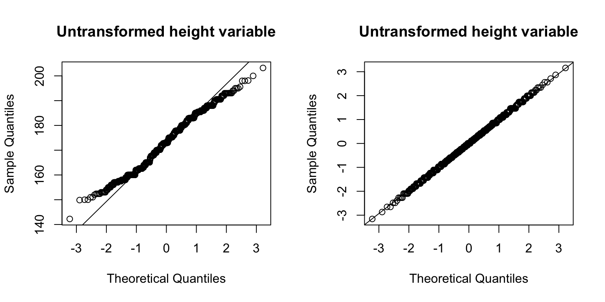
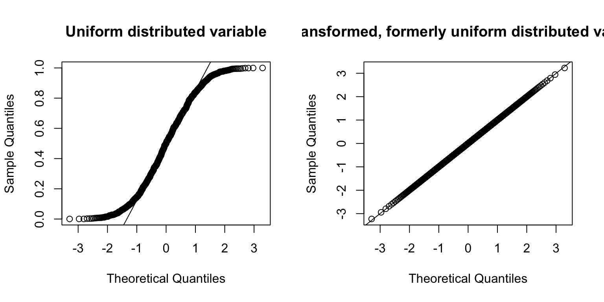
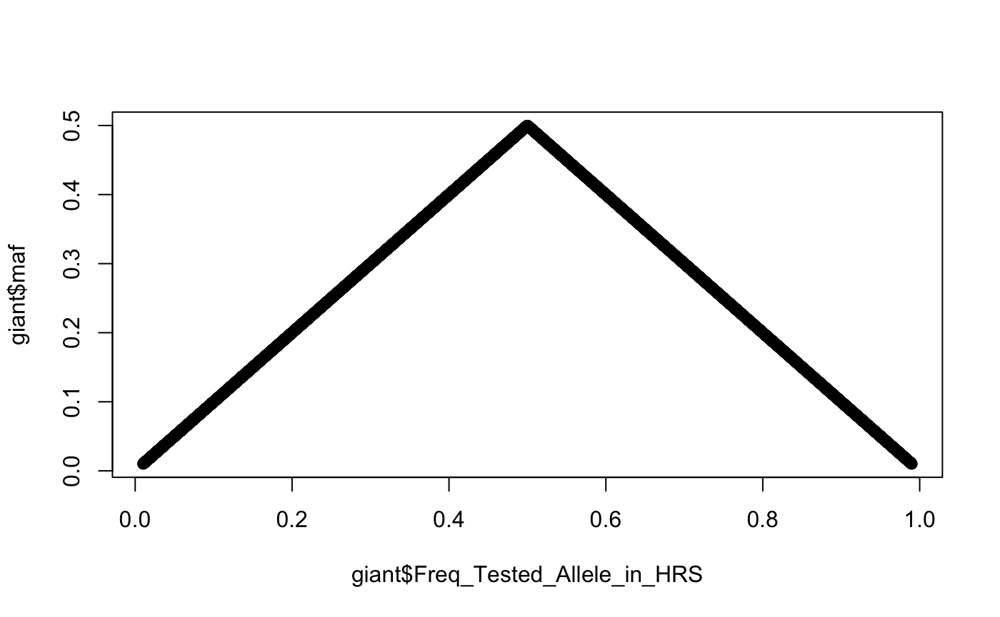
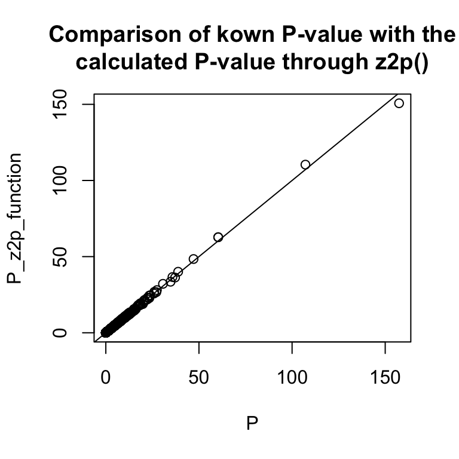
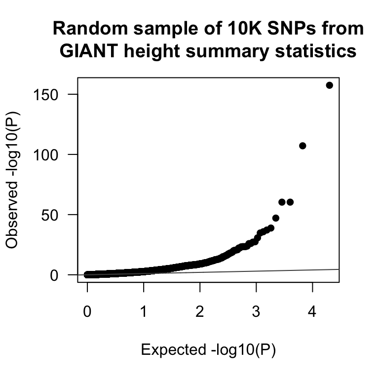

vignettes/gwas-utils-package.Rmd
gwas-utils-package.Rmdlibrary(GWAS.utils)GWAS.utils is an R package with basic helper functions for manipulating GWAS data, including two GWAS datasets.
The functions are basic, some just trivial wrappers with a few lines of code (e.g. trans_inv_normal()). But they all tackle a specific problem, for which either no function was elsewhere available, or the function was available, but part of a heavy package.
Here is a quick overview of what functions are available.
eaf2maf(eaf = eaf_vec): Transforms effect allele frequencies into minor allele frequencies.inv_normal(x = vec): Inverse normal transformation of a variable.z2p(z = z_vec): Transforms Z-statistics to P-values, includes an option for very large Z-statistics.eff_nbr_tests(mat = genotype_df): Calculates the effective number of tests of a GWAS, based on the correlation between the SNPs.QQplot(p = p_vec): Q-Q-plot of P-values (uniformly distributed under the null).genomic_inflation(Z = z_vec): Calculates genomic inflation, with either P-values or Z-statistics.Further down you will find examples for each of them.
The usefulness of this package for other users, however, are two datasets. Before going into the details of the functions, let me first describe the datasets.
To my knowledge, there are no real (i.e. not simulated) genetic datasets available in R, hence there are also just a few R examples around that use genetic data. There are two principal reasons for the lack of genetic data in R. First, genetic data is usually securely locked and not publicly available (for good reasons!). Second, genetic data is typically large in size, often hundreds of thousands of columns wide, making it suboptimal to embedded in an R package. The two datasets contained in the GWAS.utils package are open source, and restricted in size.
There is a public genetic database called openSNP, and for the purpose of the crowdAI height prediction challenge Olivier Naret curated a genotype dataset that is available for download on zenodo (Naret 2018).
To generate the dataset opensnp, I downloaded the dataset from zenodo, extracted 21 SNPs on chromosome 1 within the range of 15’000’000 and 20’000’000 bp1 from the training dataset of 784 individuals and transformed the vcf file with PLINK (Chang et al. 2015) into the number of minor alleles (allele dosages): 0 for homozygous major allele (AA), 1 heterozygous (Aa), 2 homozygous minor allele (aa). I then joined the dataset with the height information that was also available and stored the dataset as opensnp.
The data preparation process is described in opensnp-data.R.
Each row represents one individual, the columns the ID, height and 22 genetic variants (SNPs). The SNP name is a combination of SNP identifier and the minor allele.
skimr::skim_with(factor = list(ordered = NULL))
skimr::skim(opensnp %>% dplyr::select(-id) %>% dplyr::mutate_at(dplyr::vars(dplyr::starts_with("rs")), as.factor))
#> Skim summary statistics
#> n obs: 784
#> n variables: 22
#>
#> ── Variable type:factor ──────────────────────────────────────────────────────────────────────────────────────────────────────────────────────────────────────────
#> variable missing complete n n_unique top_counts
#> rs10489858_C 0 784 784 3 0: 627, 1: 154, 2: 3, NA: 0
#> rs10917451_C 0 784 784 3 0: 400, 1: 321, 2: 63, NA: 0
#> rs12059827_G 0 784 784 3 0: 691, 1: 91, 2: 2, NA: 0
#> rs12066114_G 0 784 784 3 0: 411, 1: 317, 2: 56, NA: 0
#> rs1542875_C 0 784 784 3 0: 384, 1: 329, 2: 71, NA: 0
#> rs1985272_C 0 784 784 3 1: 375, 0: 276, 2: 133, NA: 0
#> rs2014725_T 0 784 784 3 1: 349, 0: 303, 2: 132, NA: 0
#> rs2057096_G 0 784 784 3 1: 372, 0: 266, 2: 146, NA: 0
#> rs2076595_T 0 784 784 3 1: 378, 0: 278, 2: 128, NA: 0
#> rs2076596_T 0 784 784 3 1: 377, 0: 279, 2: 128, NA: 0
#> rs214302_G 0 784 784 3 1: 396, 0: 238, 2: 150, NA: 0
#> rs3748756_T 0 784 784 3 0: 474, 1: 266, 2: 44, NA: 0
#> rs3818033_G 0 784 784 3 0: 341, 1: 341, 2: 102, NA: 0
#> rs3818038_G 0 784 784 3 0: 342, 1: 340, 2: 102, NA: 0
#> rs4508039_C 0 784 784 3 1: 373, 0: 306, 2: 105, NA: 0
#> rs4911997_A 0 784 784 3 1: 390, 0: 238, 2: 156, NA: 0
#> rs4912090_C 0 784 784 3 0: 461, 1: 271, 2: 52, NA: 0
#> rs730387_A 0 784 784 3 0: 380, 1: 319, 2: 85, NA: 0
#> rs7516087_G 0 784 784 3 0: 396, 1: 310, 2: 78, NA: 0
#> rs7536679_G 0 784 784 3 1: 386, 0: 218, 2: 180, NA: 0
#> rs999974_G 0 784 784 3 0: 385, 1: 331, 2: 68, NA: 0
#>
#> ── Variable type:numeric ─────────────────────────────────────────────────────────────────────────────────────────────────────────────────────────────────────────
#> variable missing complete n mean sd p0 p25 p50 p75 p100
#> height 0 784 784 173.21 10.5 142.24 165 173 181 203.2
#> hist
#> ▁▂▇▆▇▆▂▁The second dataset are summary statistics from a height meta-analysis published in 2018 by Yengo et al. 2018 (download here), estimated from over 600’000 individuals. The 10’000 genetic variants are a random sample from 2’336’269 genetic variants in the dataset.
Each row represents one genetic variant (SNP), the columns the chromosome (CHR), position in bp (POS), the SNP identifier (SNP), the effect allele (Tested_Allele), the reference allele (Other_Allele), effect allele frequency in the Health and Retirement Study (HRS) (Freq_Tested_Allele_in_HRS), effect size (BETA), standard error (SE), p-value (P) and sample size (N).
str(giant)
#> Classes 'tbl_df', 'tbl' and 'data.frame': 10000 obs. of 10 variables:
#> $ CHR : int 4 14 3 2 13 20 10 4 11 14 ...
#> $ POS : int 54901476 35406913 107654661 196176509 22008438 44381615 127920542 42646677 11986061 52176988 ...
#> $ SNP : chr "rs11934081" "rs712313" "rs17228803" "rs1554603" ...
#> $ Tested_Allele : chr "T" "T" "A" "T" ...
#> $ Other_Allele : chr "C" "G" "G" "G" ...
#> $ Freq_Tested_Allele_in_HRS: num 0.637 0.71 0.384 0.965 0.68 ...
#> $ BETA : num 0.0004 0.0008 -0.0029 -0.0056 0.0044 -0.0008 0.0009 0.0026 0.0101 -0.0038 ...
#> $ SE : num 0.0018 0.0019 0.0018 0.0048 0.0019 0.0018 0.0018 0.002 0.002 0.0021 ...
#> $ P : num 8.0e-01 6.8e-01 9.5e-02 2.5e-01 1.8e-02 6.5e-01 6.2e-01 1.9e-01 3.7e-07 6.8e-02 ...
#> $ N : int 691061 686354 691299 635193 690898 692535 686996 672011 692536 691290 ...The six functions can be categorised into two groups: four of them take some type of summary statistics as input, two of them individual data (inv_normal() and eff_nbr_tests).
To account for multiple testing, Bonferroni correction is often used in the context of GWASs. But because of correlation between genetic variants (=linkage disequilibrium), the number of tests performed might over-adjust the significance threshold. Using a method by Gao et al. 2008 we can determine the effective number of tests performed, based on the correlation between the SNPs. The input of the function is a genotype dataset or a correlation matrix, the output a single number.
eff_nbr_tests(mat = opensnp %>% dplyr::select(-id, -height))
#> [1] 16This function forces any variable to be normally distributed.
opensnp$height_tranformed <- GWAS.utils::trans_inv_normal(opensnp$height)
par(mfrow = c(1,2))
qqnorm(opensnp$height, main = "Untransformed height variable")
qqline(opensnp$height)
qqnorm(opensnp$height_tranformed, main = "Untransformed height variable")
qqline(opensnp$height_tranformed)
## or
X <- runif(1000)
X_transformed <- GWAS.utils::trans_inv_normal(runif(1000))
par(mfrow = c(1,2))
qqnorm(X, main = "Uniform distributed variable")
qqline(X)
qqnorm(X_transformed, main = "Transformed, formerly uniform distributed variable")
qqline(X_transformed)
Simple function to convert effect allele frequencies into minor allele frequencies that range between 0 and 0.5
giant$maf <- eaf2maf(giant$Freq_Tested_Allele_in_HRS)
plot(giant$Freq_Tested_Allele_in_HRS, giant$maf)
In the simplest case, transforming a Z-statistic into a P-value is straightforward.
2 * pnorm(2, lower.tail= FALSE)
#> [1] 0.04550026But in genetics, P-values can get extremely small, and starting from an absolute Z-statistics of 38, the returned P-value will be 0.
There is an additional trick, using the log argument and then back transforming it using exp, to compute the P-value for Z=38, but for Z=39 this does not work anymore.
exp(pnorm(abs(38), log.p = TRUE, lower = FALSE)) * 2
#> [1] 5.770857e-316
exp(pnorm(abs(39), log.p = TRUE, lower = FALSE)) * 2
#> [1] 0This has to do with the way R can operate small numbers. The package Rmpfr provides a solution to this, and the function z2p makes use of this functionality in order to deal with very small number.
z2p(39)
#> Some P-values are equal to 0. Try using the option method = 'Rmpfr::pnorm'
#> [1] 0
z2p(39, method = c("Rmpfr::pnorm"))
#> using method Rmpfr::
#> 1 'mpfr' number of precision 100 bits
#> [1] 1.070623822430189070363097933135e-332Even though the Z-statistics in the giant data set are not that large, we can apply the z2p function to compare the known P-value with the calculated P-value.
giant$P_z2p_function <- z2p(giant$BETA/giant$SE, method = c("Rmpfr::pnorm"))
#> using method Rmpfr::
plot(-log10(giant$P), -log10(giant$P_z2p_function), main = "Comparison of kown P-value with the\ncalculated P-value through z2p()", ylab = "P_z2p_function", xlab = "P")
abline(a = 0, b = 1)
P-values should be uniformly distributed under the null hypothesis. A Q-Q-plot checks the deviation from the uniform distribution. There are a number of packages that implement this type of plot (e.g. qqman).
QQplot(giant$P, main = "Random sample of 10K SNPs from\nGIANT height summary statistics")
To check a GWAS for inflation in P-values, the genomic inflation factor can be computed, which should be around a value of 1. Compared to other genomic inflation implementations, our function takes two types of summary statistics as input by making an assumption about the P-value origin.
## use with Z-statistics
genomic_inflation(Z = giant$BETA/giant$SE)
#> [1] 2.755839
## or use with P-value
genomic_inflation(P = giant$P)
#> [1] 2.788867Chang CC, Chow CC, Tellier LCAM, Vattikuti S, Purcell SM, Lee JJ (2015). Second-generation PLINK: rising to the challenge of larger and richer datasets. GigaScience, 4.
Naret O (2018). CrowdAI / OpenSNP - height prediction challenge [Data set]. Zenodo. http://doi.org/10.5281/zenodo.1442755
Yengo L, Sidorenko J, Kemper KE, Zheng Z, Wood AR, Weedon MN, Frayling TM, Hirschhorn J, Yang J, Visscher PM, the GIANT Consortium (2018). Meta-analysis of genome-wide association studies for height and body mass index in ∼700000 individuals of European ancestry. Human Molecular Genetics, Volume 27, Issue 20, 15 October 2018, Pages 3641–3649, https://doi.org/10.1093/hmg/ddy271.
Gao X , Starmer J and Martin ER (2008). A multiple testing correction method for genetic association studies using correlated single nucleotide polymorphisms. Genet. Epidemiol., 32: 361-369, doi:10.1002/gepi.20310.
Chromosome 1, 15’000’000 - 20’000’000 encompasses two regions with known human height associations: https://www.nature.com/articles/ng.3097#s2.↩︎